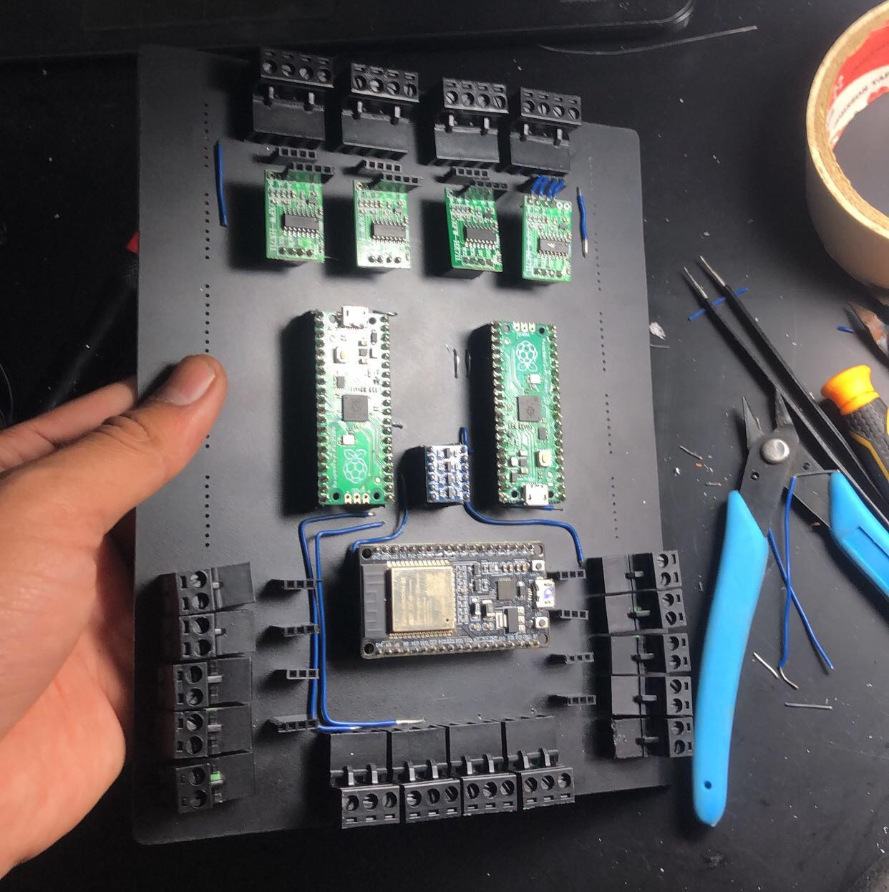

Filling Machine
View Code ↗During my tenure at Esforge Pvt Ltd, I led the development of a Filling Machine designed to automate packet filling in a manufacturing plant. This project replaced a manual process that required 15 people, achieving full automation through advanced embedded systems, precise motor control, and IoT integration. I was responsible for the embedded firmware development, PCB design, and PCB fabrication.
Project Overview
The Filling Machine was engineered to automate the filling of packets in a manufacturing plant, streamlining a labor-intensive process. The system utilized 11 NEMA 34 stepper motors to control various stages of the filling process, including material dispensing, packet positioning, and sealing. Two RPI Picos were employed to manage the parallel control of these motors, while an ESP32 handled data transmission to the cloud over Wi-Fi for real-time monitoring and analytics.
System Architecture
The system architecture was designed for scalability and precision. Two RPI Picos were used as the primary controllers, each managing a subset of the 11 stepper motors to ensure parallel operation without latency. The RPI Picos communicated with each other via a custom I2C protocol to synchronize their tasks. An ESP32 served as the IoT gateway, collecting operational data (e.g., motor status, production rate, error logs) and transmitting it to a cloud server using the MQTT protocol.
The machine’s workflow involved multiple stages: material loading, packet positioning, filling, and sealing. Each stage was controlled by a dedicated stepper motor, ensuring precise and repeatable movements throughout the process.
Motor Control with RPI Pico and PIO
The Filling Machine relied on 11 NEMA 34 stepper motors, each paired with a high-performance stepper driver supporting 512 microstepping. This high level of microstepping allowed for smooth and precise movements, critical for accurate packet filling and positioning. The motors were controlled using the Programmable I/O (PIO) feature of the RPI Pico, which enabled low-level, high-speed control of the stepper motors.
To optimize performance, I programmed the PIO blocks in assembly language, creating a custom stepper control library. The PIO handled the generation of step and direction pulses for each motor, allowing the RPI Pico’s main cores to focus on higher-level tasks like synchronization and error handling. This approach minimized latency and ensured all 11 motors operated in parallel without timing conflicts.
The firmware was written in C++ using a class-based approach, which I adopted to improve code modularity and maintainability. I developed classes for motor control, communication, and data logging, learning a great deal about object-oriented programming in C++ during this project. The class-based structure also made it easier to debug and extend the firmware as the project evolved.
IoT Integration with ESP32
The ESP32 was integrated to enable cloud connectivity, allowing the plant managers to monitor the machine’s performance remotely. The ESP32 collected data from the RPI Picos via a UART interface and transmitted it to the cloud using the MQTT protocol. Key metrics included the number of packets filled, motor uptime, and any error conditions (e.g., motor stalling or material shortages).
The ESP32 firmware was developed using the Arduino framework, with a focus on reliability and low latency. A lightweight JSON format was used to structure the data, ensuring efficient transmission over Wi-Fi to the cloud server.
Hardware Design: PCB Development and Fabrication
I designed and fabricated a custom PCB to integrate all the electronic components of the Filling Machine. The PCB was designed using KiCAD and featured a 4-layer layout to handle the complex routing requirements of 11 stepper motor drivers, two RPI Picos, an ESP32, and power regulation circuits. The board included high-current traces for the motor drivers and thermal vias to manage heat dissipation.
The PCB fabrication process involved working with a local manufacturer to produce the boards. I oversaw the entire process, from Gerber file generation to final assembly, ensuring the boards met the required specifications. The final PCB supported the parallel operation of all components, providing a reliable foundation for the machine’s operation.

System Integration and Deployment
The Filling Machine was deployed in a manufacturing plant, where it successfully replaced a manual process that previously required 15 people. The system automated the entire packet-filling workflow, achieving a throughput of over 500 packets per hour. The use of 11 stepper motors ensured precise control at every stage, while the IoT integration provided valuable insights for optimizing production.
During deployment, the machine was tested extensively to ensure reliability under continuous operation. The class-based firmware design proved invaluable, as it allowed for quick adjustments and debugging in the field. The project was a significant learning experience, particularly in mastering C++ and low-level motor control with PIO.
Technical Features
- Parallel control of 11 NEMA 34 stepper motors with 512 microstepping
- Dual RPI Pico architecture for high-speed motor control
- Custom stepper control library using PIO and assembly
- Class-based C++ firmware for modularity and scalability
- IoT integration with ESP32 for cloud connectivity via MQTT
- Custom-designed and fabricated 4-layer PCB
- Automated packet filling, replacing a 15-person manual process
This project at Esforge Pvt Ltd was a testament to my ability to design and implement complex embedded systems, from low-level motor control to IoT integration and hardware design. It also deepened my understanding of C++ and real-time systems, making it one of the most rewarding projects in my career.